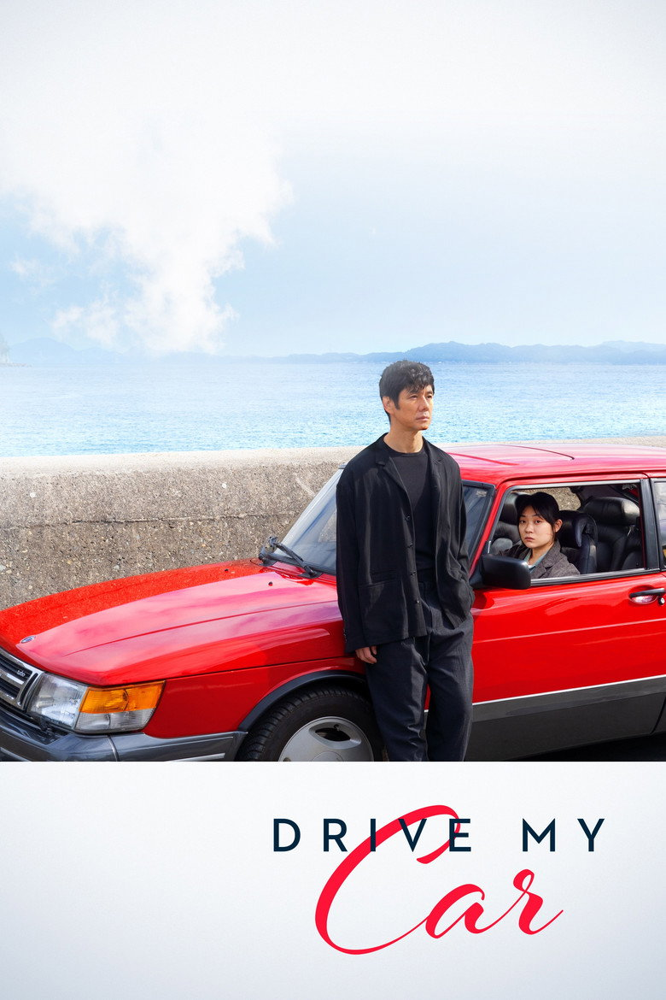

#1

2x
“Those who survive keep thinking about the dead. In one way or another, that will continue. You and I must keep on living like that.”
This film marked the beginning of my journey into Hamaguchi's work. Walking into the cinema on a weekend morning at 10:30 AM knowing virtually nothing about it turned out to be the best decision I ever made, cementing this as my all-time favorite film. Spanning three hours, the film delves into grief, regret, and life itself. Sometimes life doesn't turn out the way we hope, but there is only one way through it: to live it. The long, intimate conversations inside the red Saab 900 traveling across various corners of Japan truly immersed me in the serene, evocative atmosphere Hamaguchi crafted so masterfully.